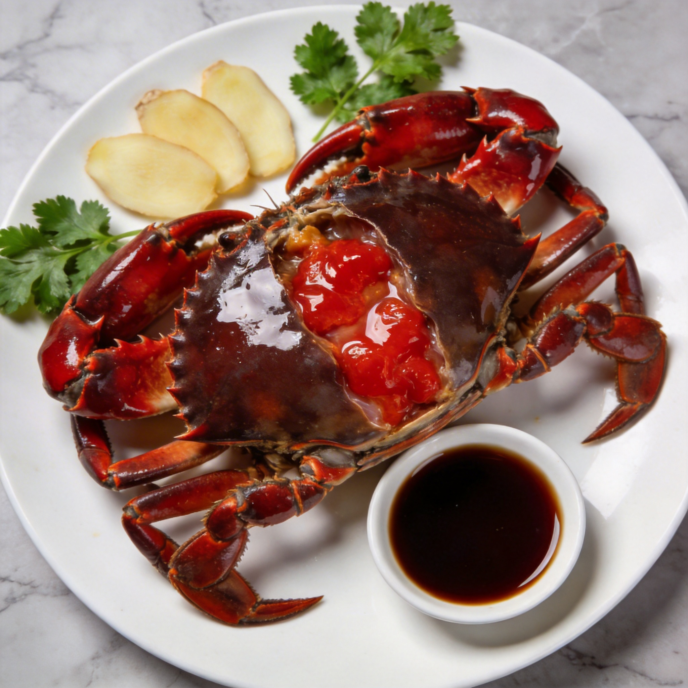

宁波海鲜代表作，鲜甜红膏满口香

红膏呛蟹是宁波最具代表性的海鲜冷菜，选用膏肥肉满的梭子蟹，经过盐水腌制而成。呛蟹肉质鲜嫩，红膏肥美，咸鲜适口，是宁波人过年餐桌上必不可少的美味。
红膏呛蟹的制作讲究时机和手法，要选择膏满的母蟹，盐水浓度要恰到好处。吃时配上姜醋，更能提鲜去寒，回味无穷。
腌制时间
4-6小时适用人数
4-6人按照以下步骤制作鲜美的红膏呛蟹
选择新鲜的母梭子蟹，最好是膏满的，蟹壳呈青灰色，蟹肚饱满，用手掂量有分量感。农历九月的母蟹最肥美，是制作呛蟹的最佳时节。
小贴士：蟹脐圆而饱满的是母蟹，红膏更丰富。
将清水和精盐按比例调制，一般1000毫升水加200克盐。将水烧开后加入精盐，搅拌至完全溶解，然后晾凉备用。盐水的浓度决定了呛蟹的咸淡。
小贴士：盐水浓度以能让鸡蛋浮起来为宜。
将活蟹洗净，放入凉透的盐水中浸泡。腌制时间约4-6小时，期间要翻动几次，确保腌制均匀。腌好后取出，沥干水分。
小贴士：腌制时间过长会过咸，时间过短则入味不足。
将腌好的螃蟹对半切开，去蟹腮、蟹胃等不能食用的部分。然后切成小块，整齐摆放在盘中，蟹壳朝上，红膏朝外，更加美观诱人。
小贴士：切蟹时动作要快，保持蟹肉完整。
将切好的呛蟹配上姜醋汁上桌。姜醋的做法很简单，将生姜切成细末，加入米醋和少许白糖拌匀即可。吃时蘸姜醋，既提鲜又去寒。
小贴士：呛蟹性寒，配姜醋食用更健康。